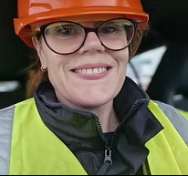

About Foley Fire
A proud, family-run, female-led business — a mother-and-daughter team bringing a personal and dedicated approach to fire safety.
Who you'll deal with
Meet the team
With a combined eight years in fire safety, we stay fully up to date with the latest regulations and best practices. When you call Foley Fire, you speak to the people who do the work.

Becky
Tier 3 IFSM · TFRAR · AIFSM
Becky brings a wealth of experience from social care and social housing, where she worked as a senior manager before retraining as a fire risk assessor in 2021. After starting in a family-run fire and security business, she founded Foley Fire Risk Assessment Ltd in 2023. A Tier 3 IFSM-registered assessor, Becky specialises in complex sites and all stages of construction, and works independently as an associate validator.
Molly
L4CertFRA · TIFSM
Molly brings a unique perspective to fire risk assessment, having witnessed the impact of fire firsthand through her background in fire restoration. She ran operations for a fire and security company before joining Foley Fire, achieving her Level 4 qualification in 2024. Molly specialises in listed buildings, blocks of flats and holiday accommodation — and loves travelling for work and meeting new people.
Errol
Chief Morale Officer
Errol is Foley Fire's resident office hoover, white noise machine and all-around entertainer. When he's not keeping the floor crumb-free, he can be found snoring through meetings or demanding well-earned belly rubs. A firm believer in work-life balance, he reminds the team to take breaks.
Why choose us
Independent, unbiased — and built that way on purpose
No affiliations
We have no ties to fire and security companies, so we never upsell additional services where they aren't required.
Proportionate by principle
We understand the importance of not over-recommending or causing unnecessary concern — our advice is always measured.
Small-business value
As a small business we offer competitive pricing without sacrificing quality — thorough assessments at an honest rate.
Accredited & audited
BAFE SP205 certified through SSAIB and affiliated with the IFSM — our competence is independently verified.
Our experience
All premises types, from complex to straightforward
We specialise in fire risk assessments for all types of premises — pre-construction and construction site assessments, pre-occupation FRAs, and tailored assessments for complex sites, care homes and schools. With extensive knowledge of listed buildings and holiday lets, our team is empathetic and understands the importance of getting advice right first time. In addition to assessments, we offer fire safety consultancy and fire door surveys.
Speak to Becky or Molly today
Tell us about your building and we'll come back with a fixed quote — usually the same day.
Request a quote 01242 379069